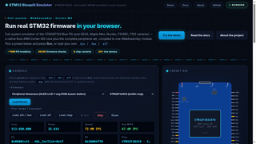
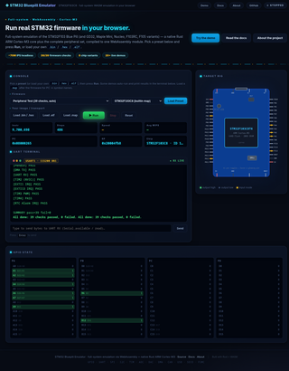
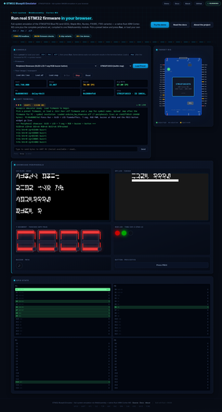
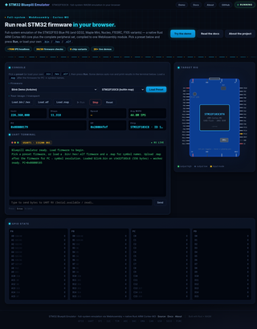
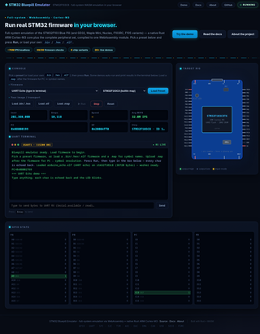
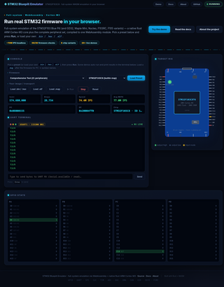

Start here
Live demo
Run real firmware in your browser: pick a preset (blink, UART echo, CAN chat, USB CDC, RTOS, per-board builds…), press Run, watch the terminal, GPIO grid and pin activity. Load your own .bin / .hex / .elf plus an optional .map for symbol names.
Screenshots
Captured from the live demo 6 shots · click any thumbnail to explode it






CLICK ANYWHERE OR ESC TO CLOSE
Reference (rendered live from the repo sources)
Loading…
Tools
WebSocket viewer
Stream a headless Node emulation into a browser: UART terminal, GPIO grid, event log. Pair with pkg/ws-server.mjs.
Full reference
These pages render the same markdown sources shipped in the repo — what you read here is what is committed. Start from the readme, usage guide or the source.